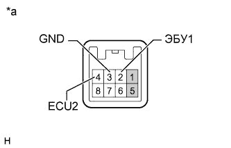

DTC C1791/91 Цепь выключателя регулируемой адаптивной подвески (AVS) (DTC режима активной диагностики) |
| Код DTC | Условие обнаружения DTC | Неисправный участок |
| C1791/91 | Сигнал управляющего переключателя амортизатора не изменяется. |
|
| 1.СНИМИТЕ ПОКАЗАНИЯ ПОРТАТИВНОГО ДИАГНОСТИЧЕСКОГО ПРИБОРА (DAMPING CONTROL SWITCH) |
Выключите зажигание.
Подсоедините портативный диагностический прибор к DLC3.
Включите зажигание (IG).
Включите портативный диагностический прибор.
Войдите в следующие меню: Chassis / Air suspension / Data List.
| Информация на дисплее прибора | Измеряемая величина / диапазон измерения | Нормальное состояние | Замечание по диагностике |
| Damping Control Switch | Положение управляющего переключателя амортизатора / NORMAL, COMFORT или SPORT | Индикация текущего положения управляющего переключателя амортизатора | - |
Убедитесь в том, что значение, отображаемое на экране портативного диагностического прибора, при манипулировании управляющим переключателем амортизатора изменяется (устанавливаются значения COMF, NORMAL и SPORT).
|
| ||||
| OK | ||
| ||
| 2.ПРОВЕРЬТЕ УПРАВЛЯЮЩИЙ ПЕРЕКЛЮЧАТЕЛЬ АМОРТИЗАТОРА |
Выключите зажигание.
Снимите управляющий переключатель амортизатора (Нажмите здесь).
|  |
Измерьте сопротивление в соответствии со значениями, приведенными в таблице ниже.
| Контакты для подключения диагностического прибора | Положение переключателя | Заданные условия |
| 3 (GND) - 4 (ECU2) | Положение COMF | Менее 1 Ом |
| Нормальное положение | 10 кОм или более | |
| 3 (GND) - 2 (ECU1) | Положение SPORT | Менее 1 Ом |
| Нормальное положение | 10 кОм или более |
| *a | Устройство с неподсоединенным жгутом проводов (управляющий переключатель амортизатора) |
|
| ||||
| OK | |
| 3.ПРОВЕРЬТЕ ЖГУТ ПРОВОДОВ И РАЗЪЕМ (УПРАВЛЯЮЩИЙ ПЕРЕКЛЮЧАТЕЛЬ АМОРТИЗАТОРА – ЭБУ УПРАВЛЕНИЯ ПОДВЕСКОЙ) |
Отсоедините разъем G111 управляющего переключателя амортизатора.
Отсоедините разъем A49 ЭБУ управления подвеской.
Измерьте сопротивление в соответствии со значениями, приведенными в таблице ниже.
| Контакты для подключения диагностического прибора | Условие | Заданные условия |
| G111-2 (ECU1) - A49-23 (TSW1) | Всегда | Менее 1 Ом |
| G111-4 (ECU2) - A49-22 (TSW2) | Всегда | Менее 1 Ом |
| G111-3 (GND) - масса | Всегда | Менее 1 Ом |
| G111-2 (ECU1) - масса | Всегда | 10 кОм или более |
| G111-4 (ECU2) - масса | Всегда | 10 кОм или более |
|
| ||||
| OK | ||
| ||